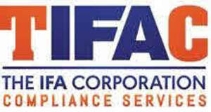

Trade Mark Journal No.2026/006 6 February 2026
UK00004326331 19 January 2026 (36,45)

- Class 36
- Financial investment; Financial investments; Financial and monetary services; Financial transactions; Financial and monetary services, and banking; Financial securities; Financial assistance; Financial services; Financial management; Management (Financial -); Financial brokerage; Brokerage (Financial -); Financial affairs; Financial sponsorship; Financial consulting; Financial economic analysis; Financial forecasting; Banking and financial services; Financial investment services; Financial information; Information (Financial -); Financial consultancy; Consultancy (Financial -); Valuations (Financial -); Financial planning; Financial valuations; Financial and monetary transaction services; Financial economic advisory services; Economic financial research services; Economic research services [financial]; Financial advice; Financial information services relating to financial stock markets; Financial research; Research (Financial -); Financial appraisal; Financial analysis; Analysis (Financial -); Personal financial banking services; Financial credit services; Financial analyses; Financial patronage; Financial appraisals; Appraisals (Financial -); Financial evaluations; Financial management of funds; Financial evaluation; Financial investment brokerage; Financial exchange; Financial management for businesses; Personal financial planning; Financial information for investors; Financial assessments; Management of financial assets; Financial management of pensions; Financial transaction services; Financial sponsorship services; Financial guardianship; Financial affairs services; Financial studies; Studies (Financial -); Financial savings services; Financial management relating to banking; Financial fund management; Financial investment management services; Financial valuation services; Financial trust operations; Financial management of stocks; Financial management of companies; Financial planning services; Financial investment fund services; Financial management services; Financial brokerage services; Personal financial planning services; Financial consultation; Financial loss management; Financial investment research services; Financial appraisal services; Consultations [financial]; Financial risk management; Risk management [financial]; Financial services relating to investment; Financial asset management; Financial research services; Financial management relating to investment; Financial management of cash accounts; Arranging of financial investments; Financial investment advisory services; Financial analysis services; Provision of financial securities; Planning (estate -) [financial]; Financial information services; Evaluation (Financial -) [insurance, banking, real estate]; Financial evaluation [insurance, banking, real estate]; Financial trust management; Financial investigation services; Acquisition for financial investment; Financial advisory services; Financial risk management services; Financial market information services; Financial consulting services; Financial and investment consultancy services; Financial intermediary services; Financial trust planning; Financial planning for retirement; Asset evaluation [financial]; Financial exchange services; Financial services relating to business; Financial assessment of company credit; Financial investment in the field of securities; Brokerage services in financial markets; Financial portfolio management; Personal financial planning advisory services; Pension fund financial management; Financial underwriting and securities issuance (investment banking); Fundraising and financial sponsorship; Financial management and planning; Financial planning and management; Financial advisory services for companies; Financial information and advisory services; Financial advisory and management services; Financial advice and consultancy services; Financial consulting and advisory services; Financial consultancy and advisory services; Financial advisory and consultancy services; Financial services relating to wealth management; Financial planning and investment advisory services; Financial consultancy services.
- Class 45
- Regulatory compliance auditing; Advisory services relating to regulatory affairs.
The IFA Corporation Limited